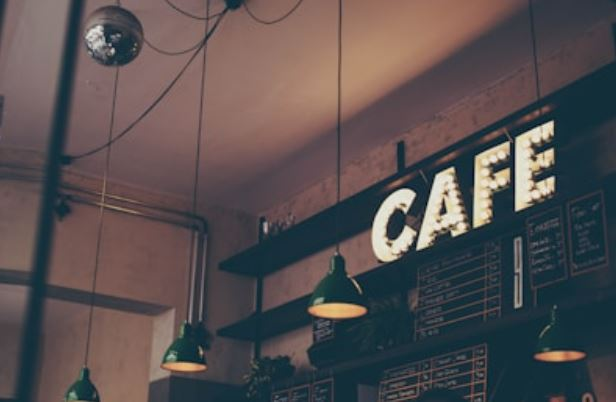
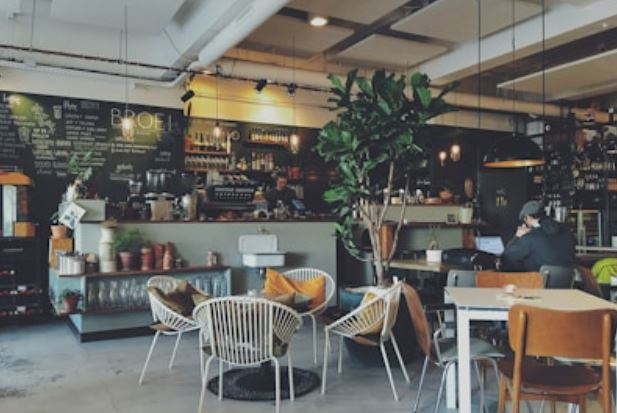

National Library of the Philippines
Ermita, Manila (Near TUP)
Spacious, quiet reading rooms with free admission, offering the perfect atmosphere for intense research and deep focus.
A curated guide to quiet, student-friendly cafes and work hubs near campus with great Wi-Fi and power outlets.
Ermita, Manila (Near TUP)
Spacious, quiet reading rooms with free admission, offering the perfect atmosphere for intense research and deep focus.
UN Avenue, Manila
Offers steady Wi-Fi, abundant power sockets, and strong coffee to keep you energized through long coding or writing sessions.

Malate, Manila
A cozy, minimalistic neighborhood cafe serving great local coffee with a relaxed environment ideal for reading and light work.
